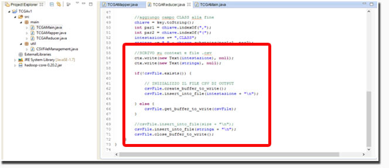

The Cancer Genoma Atlas
The Cancer Genoma Atlas
The Cancer Genome Atlas (TCGA) è un’opera globale e coordinata per accelerare la comprensione del cancro attraverso l'applicazione di tecnologie di analisi del genoma, compreso il sequenziamento su larga scala del genoma umano.
 Figura 1: TCGA logo
Figura 1: TCGA logo
Offre una piattaforma gratuita che consente di ricercare e scaricare al link https://tcga-data.nci.nih.gov/tcga/tcgaHome2.jsp interi dataset contenenti informazioni cliniche utili per analisi genomiche, rispettando la privacy dei pazienti.
Back on top.
Descrizione del dataset
Per lo svolgimento del progetto è stato preso in considerazione il dataset del TCGA relativo all’adenocarcinoma allo stomaco costituito da ~271 file di tipo gene.quantification.txt (dimensione totale = 330 MB).
Ogni file esaminato si riferisce ad uno specifico paziente ed è stato generato applicando la tecnica del RNA-Sequencing, una metodologia per l’analisi del trascrittoma (ovvero l’insieme dei trascritti di RNA che caratterizzano un dato stadio di sviluppo di una cellula). Ciascun file contiene quindi, la lista dei geni del paziente (in media ~24000) e per ognuno di essi il valore del RPKM (Reads
Per
Kilobase
per
Million
mapped
reads), oltre ad altre informazioni.
Il valore RPKM rappresenta una misura dell’espressione genica ricavata con metodi di normalizzazione applicati nella tecnica di sequenziamento del RNA.
 Figura 3: a sinistra viene mostrata una porzione del dataset STAD contenente file gene.quantification.txt. A destra un file gene.quantification.txt con l’elenco dei geni e i valori di RPKM ad essi associati.
Figura 3: a sinistra viene mostrata una porzione del dataset STAD contenente file gene.quantification.txt. A destra un file gene.quantification.txt con l’elenco dei geni e i valori di RPKM ad essi associati.
[Example file gene.quantification.txt]
Tutti i nomi dei file presenti nei dataset si uniformano ad un particolare standard (barcode); è stato quindi possibile estrarre da essi il codice identificativo del paziente e la codifica della classe di appartenenza.
La figura che segue mostra il barcode per la nomenclatura dei file.
Come si nota, il barcode è una composizione di una collezione di identificatori. Ai fini del progetto sono stati presi in considerazione:
- Il Participant, identificativo del paziente
- Il Vial, identificativo dell’ordine del campione in una sequenza di campioni. Assume valori compresi tra A e Z.
- Il Sample, identificativo del tipo di campione esaminato.
Il Sample può assumere diversi valori:
- da 01 a 09, identificano il tipo Tumoral
- da 10 a 19, identificano il tipo Normal
- da 20 a 29, identificano il tipo Control
Back on top.
Estrazione dei dati
Per estrarre le informazioni di interesse si è proceduto alla creazione di un Job Map-Reduce utilizzando il framework Apache Hadoop.
- Fase di Map
Nella fase di Map, a partire dal nome del file di ogni paziente, vengono estratti il Participant, il Sample e il Vial che, insieme, andranno a costituire le “key” del mapper.
Per ogni file vengono inoltre estratti i nomi dei geni e il valore del RPKM ad essi associato che, combinati insieme attraverso un separatore (il carattere “$”), andranno a rappresentare i “value” del mapper.
Da questa prima fase si ottengono quindi coppie chiave – valore del tipo:
[Participant(SampleVial), gene$RPKM] - Fase di Reduce
La fase di Reduce prende in input l’output del mapper raggruppato per chiave, ovvero coppie chiave-valore nelle quali la chiave è costituita dalla stringa Participant(sampleVial) e il valore è una lista di gene$RPKM associati alla chiave.
In questa fase inoltre viene stabilita la forma che avrà l’output del job sia nel File-System di Hadoop che in un file con estensione csv. - Output generato
E’ stato previsto un solo tipo di output in forma matriciale contenente il nome dei geni sulle colonne e l’identificativo dei partecipanti nelle righe.
Figura 5: output-matrice originale
Come evidenziato in Figura 5, l’output sui file csv per la matrice originale ha una struttura del tipo: PARTICIPANT ID | CLASS ID | GENE-1|…|GENE-n|CLASS.
- PARTICIPANT ID: è l’identificativo del paziente (= Participant nel barcode).
- CLASS ID: rappresenta la classe di appartenenza del paziente codificata (Tumoral, Normal, Control) e il Sample e il Vial ad esso associati.
- GENE-1|…|GENE-n: identificatori delle colonne sono i nomi dei geni, per ciascun gene e ciascun paziente si ha, associato, il valore RPKM.
- CLASS: rappresenta la classe di appartenenza del paziente (Tumoral, Normal, Control), è una codifica del Sample.
- Dettagli di sviluppo
Come precedentemente accennato, la generazione dell’output sul file csv, avviene direttamente nella fase di Reduce, andando ad inserire l’intestazione della matrice (“intestazione”) e i relativi dati (“stringa”). La figura 6 mostra la porzione di codice per la creazione dell’output.
 Figura 6: porzione di codice relativo alla generazione dell’output
Back on top.
Analisi dei dati
L’analisi dei dati è stata condotta utilizzando il software WEKA, acronimo di "Waikato Environment for Knowledge Analysis", che fornisce un insieme di algoritmi per l'apprendimento automatico e l’estrazione di conoscenza dai dati (attività di machine learning e data mining).
- Classificazione
La classificazione ha come obbiettivo l’estrazione di modelli che descrivono classi di dati per predire valori categorici o continui. La costruzione del modello viene generalmente fatta a partire da un insieme predeterminato di classi o concetti (Training set).
Per effettuare la classificazione con Weka sono stati utilizzati alberi decisionali “Trees” (in questo caso l’algoritmo J48), utilizzando come Test Options la Cross-validation. In questo modo i record vengono suddivisi in un determinato numero di folds (nel nostro caso 10) e ogni fold, a turno, funge da validation set. Alla fine dell’analisi vengono calcolati diversi valori tra i quali il mean square error o errore quadratico medio che misura la discrepanza quadratica media fra i valori dei dati osservati ed i valori dei dati stimati, il numero e la percentuale delle istanze classificate correttamente e non e l’accuracy espressa in termini di Precision, Recall e F-Measure.
L’output della classificazione, a meno di componenti opzionali, è così costituito:
- Run information: informazioni relative al programma di apprendimento, al nome della relazione, al numero di istanze e di attributi e alle modalità di prova che sono state coinvolte nel processo.
- Classifier model (full training set): il testo del modello di classificazione che è stato prodotto sull’intero training set.
- Summary: un elenco di statistiche che riassume come il classificatore è stato in grado di predire la classe delle istanze del Test set, tra le quali l’ errore quadratico medio e la correttezza delle istanze classificate.
- Detailed Accuracy By Class: informazioni dettagliate sulla precisione di ogni classe di predizione (Precision, Recall, FMeasure).
- Confusion Matrix: mostra il numero di casi che sono stati assegnati a ciascuna classe. Sulla sua diagonale principale si individuano i valori classificati correttamente, mentre nelle restanti celle si individuano gli errori di predizione.
Di seguito si riportano come esempio porzioni di output ottenute applicando “Tree” al dataset STAD.
In blu vengono messe in risalto le varie componenti dell’output della classificazione, in rosso i risultati delle analisi.
Figura 7: porzione di output dell’analisi ottenuta con l’algoritmo J48
Nel riquadro evidenziato in rosso (Figura 7) si nota il testo del modello di classificazione prodotto sull’intero training set, nel Summary sono riportate invece il numero di istanze classificate correttamente e non e l’errore quadratico medio.
L’alta percentuale di istanze classificate correttamente dimostra la validità e la bontà del modello di classificazione ottenuto mediante l’applicazione dell’algoritmo J48.
Nella figura che segue vengono messe in risalto l’accuracy del modello di classificazione per le due classi del dataset (Tumoral e Normal) e la relativa matrice di confusione.
Attraverso la diagonale principale della matrice di confusione possiamo ricavare il numero delle istanze classificate correttamente.
Analizzando i valori di Precision, Recall e F-Measure abbiamo la conferma della bontà del modello di classificazione; tutti e tre i valori sono infatti prossimi all’unità.
Figura 8: porzione di output dell’analisi ottenuta con l’algoritmo J48
Nella figura 9 viene messa in evidenza la sezione dell’output Run Information, in essa abbiamo indicazioni dell’algoritmo di classificazione applicato (in questo caso J48), del numero di istanze e del numero di attributi analizzati, del Test Option (cross-validation) e del numero di fold scelte.
Figura 9: porzione di output dell’analisi ottenuta con l’algoritmo J48
La figura 10 mostra la corrispondenza tra il numero di istanze classificate correttamente riportato nel Summary e lo stesso valore ricavabile dalla diagonale principale della matrice di confusione. In questo caso il modello di classificazione è stato ricavato dall’applicazione dell’algoritmo J48.
 Figura 10: porzione di output dell’analisi ottenuta con l’algoritmo Tree J48
Figura 10: porzione di output dell’analisi ottenuta con l’algoritmo Tree J48
- Clustering
Le tecniche di clustering si applicano per suddividere un insieme di istanze in gruppi che riflettano qualche meccanismo o caratteristica naturale del dominio di appartenenza delle istanze stesse. Queste proprietà fanno sì che delle istanze siano accomunate da una “somiglianza” più forte rispetto agli altri dati della collezione.
Lo scopo di un algoritmo di clustering è quello di suddividere un insieme di dati in gruppi che siano quanto più possibile coerenti fra loro e allo stesso tempo diversi l’uno dall’altro (l’alta similarità intra-cluster e la bassa similarità inter-cluster).
Il clustering rappresenta la forma più comune di apprendimento non supervisionato (nessun uso di esperti umani per assegnare le istanze alle classi). L’input chiave di un algoritmo di questo tipo è dato dalla misura della distanza che viene utilizzata per suddividere le istanze in gruppi.
Per effettuare l’analisi di cluster è stato applicato su ogni dataset l’algoritmo K-Means, il più importante algoritmo di Flat clustering (crea un insieme di cluster piatto, senza una struttura gerarchica che metta in relazione i cluster l’un l’altro). Obbiettivo di K-Means è quello di minimizzare il valor medio del quadrato della distanza euclidea dei documenti dal centro del cluster a cui sono stati assegnati.
Il centro di un cluster è definito come la media di tutti i documenti presenti nel cluster (centroide).
Per la valutazione dei cluster, come accaduto per la classificazione, è stato utilizzato l’attributo CLASS.
Di seguito si riporta una porzione della schermata di output del clustering sul dataset STAD- Stomach_cancer e le relative visualizzazioni dei cluster. All’interno della sezione Run Information vengono evidenziati, in rosso, l’algoritmo di clustering applicato e il numero di istanze e di attributi valutati.
Nella sezione KMeans si trovano informazioni relative al numero di iterazioni dell’algoritmo e alla somma dell’errore quadratico, seguite dalla lista degli attributi analizzati, dal numero e dal valore delle istanze totali e delle istanze per ciascun cluster creato (in questo caso 2, uno per le istanze di tipo Normal, l’altro per le istanze di tipo Tumoral, come messo in evidenza nella figura 13).
Figura 11: porzione di output dell’analisi ottenuta con l’algoritmo Simple K-Means
Figura 12: porzione di output dell’analisi ottenuta con l’algoritmo Simple K-Means
Questa seconda porzione di output oltre ad indicare il numero e la percentuale di istanze per cluster, il class attribute e la tipologia di istanze appartenenti a ciascun cluster, mette in evidenza anche il numero e la percentuale delle istanze clusterizzate in modo errato, in questo caso circa il 28% (76/210) un valore non molto trascurabile, indice di un modello di clustering non proprio perfetto e accurato come lo erano stati i modelli di classificazione.
Back on top.